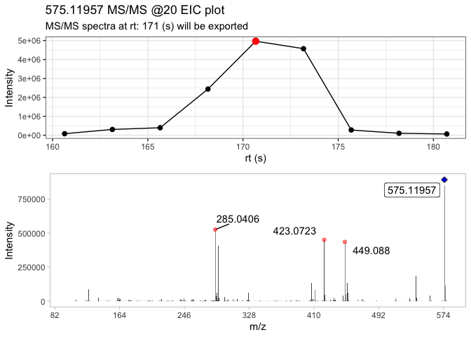
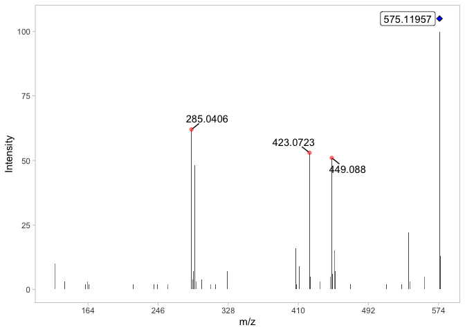

The goal of MS2extract is to provide a tool to import MS2 data of known standards or material and targeted extract the MS2 spectra in order to create an in-house MS2 library.
This package aids the creation and automatization of in-house libraries
This package DOES NOT support algorithms to annotate MS/MS data
Installation
You can install the development version of MS2extract from GitHub with:
# install.packages("devtools")
devtools::install_github("CooperstoneLab/MS2extract")Example
PPM calculation
with ppm_range you can compute a the ppm error given a m/z value and a ppm tolerance.
library(MS2extract)
#> Warning in fun(libname, pkgname): mzR has been built against a different Rcpp version (1.0.10)
#> than is installed on your system (1.0.11). This might lead to errors
#> when loading mzR. If you encounter such issues, please send a report,
#> including the output of sessionInfo() to the Bioc support forum at
#> https://support.bioconductor.org/. For details see also
#> https://github.com/sneumann/mzR/wiki/mzR-Rcpp-compiler-linker-issue.
## calculating ppm range
chlorogenic_acid_pos <- 355.1023
ppm_error <- 10
# Calculate ranges
ppm_range(mz = chlorogenic_acid_pos, ppm = ppm_error)
#> [1] 355.0987 355.1059Importing mzxml files
You can import mzxml files with the import_mzxml() function. This will import MS2 scans into a data frame. In this case, we are going to work with the Procyanidin A2 spectra in negative mode, with a collision energy of 20 eV.
# File path
ProcA2_file <- system.file("extdata",
"ProcyanidinA2_neg_20eV.mzXML",
package = "MS2extract"
)
# Compound data
ProcA2_data <- data.frame(Formula = "C30H24O12", Ionization_mode = "Negative")
ProcA2_raw <- import_mzxml(ProcA2_file, ProcA2_data)
#> • Processing: ProcyanidinA2_neg_20eV.mzXML
#> • Found 1 CE value: 20
#> • Remember to match CE velues in spec_metadata when exporting your library
#> • m/z range given 10 ppm: 575.11376 and 575.12526Extracting Procyanidin A2 spectra
Here, the mzxml file contains only the scans in the retention time window of Procyanidin A2. With the extract_MS2() functions users can detect and extract the most intense MS2 scans, and displays the TIC indicating which scan is the most intense
ProcA2_ext <- extract_MS2(ProcA2_raw, verbose = TRUE, out_list = FALSE)
This function returns a list, which contains the MS2 spectra, and the MS2 TIC plot. Since the extracted MS2 spectra contains low intensity signals (i.e. background noise), you can remove them by using the detect_mass() function.
The raw MS2 spectra contains 6226 signals which the majority of them are low intensity signals (background noise).
dim(ProcA2_ext)
#> [1] 6226 6Detecting masses
The objective is to remove low intensity signals, you can detect masses by allowing normalization by the base peak and then filtering the signals by a minimum threshold, or detecting mass with the absolute signal intensity.
Here, we will detect masses by normalization and with a minimum intensity of 1%
ProcA2_detected <- detect_mass(ProcA2_ext,
normalize = TRUE, # Allow normalization
min_int = 1
) # 1% as minimum intensity
dim(ProcA2_detected)
#> [1] 38 6Now we can see that the x-axis in the MS2 spectra is reduced to 575 m/z since the low intensity signals were removed.
plot_MS2spectra(ProcA2_detected)
Although the resulting MS2 spectra contains 38 signals, for displaying purposes we are going to include signlas greater than 10% intensity
dplyr::filter(ProcA2_detected, intensity > 10)
#> # A tibble: 9 × 6
#> # Groups: Formula, CE [1]
#> mz intensity mz_precursor rt CE Formula
#> <dbl> <dbl> <dbl> <dbl> <dbl> <chr>
#> 1 285. 62 575. 171. 20 C30H24O12
#> 2 289. 48 575. 171. 20 C30H24O12
#> 3 407. 16 575. 171. 20 C30H24O12
#> 4 423. 53 575. 171. 20 C30H24O12
#> 5 449. 51 575. 171. 20 C30H24O12
#> 6 452. 15 575. 171. 20 C30H24O12
#> 7 539. 22 575. 171. 20 C30H24O12
#> 8 575. 100 575. 171. 20 C30H24O12
#> 9 576. 13 575. 171. 20 C30H24O12Comparing two MS2 spectra with cosine score
The purpose of this section is to compare two MS2 spectra that were extracted using this package and using PCDL, a compound library developed by Agilent.
Thus, we include the MS2 spectra extracted with PCDL and use cosine similarity score to compare them by the compare_spectra() function.
# MS2 PCDL spectra
ProcA2_pcdl_fl <- system.file("extdata",
"ProcA2_neg_20eV_PCDL.csv",
package = "MS2extract"
)
# Reading the spectra
ProcA2_PCDL <- read.csv(ProcA2_pcdl_fl)
# Comparing both spectra
compare_spectra(ProcA2_detected, ProcA2_PCDL)
#> $similarity.score
#> [1] 0.9953542
#>
#> $alignment
#> mz intensity.top intensity.bottom
#> 1 125.0242 10 10
#> 2 285.0405 62 59
#> 3 289.0716 48 45
#> 4 407.0767 16 17
#> 5 423.0720 53 53
#> 6 449.0876 51 50
#> 7 452.0742 15 20
#> 8 539.0978 22 22
#> 9 575.1195 100 100
#> 10 576.1221 13 0
#>
#> $plot
#> gTree[GRID.gTree.168]